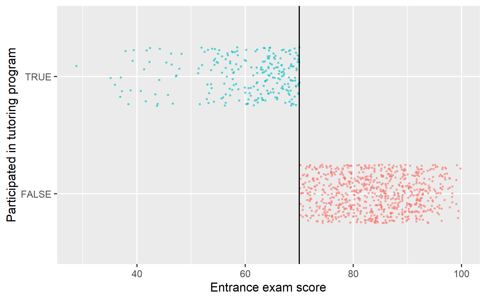
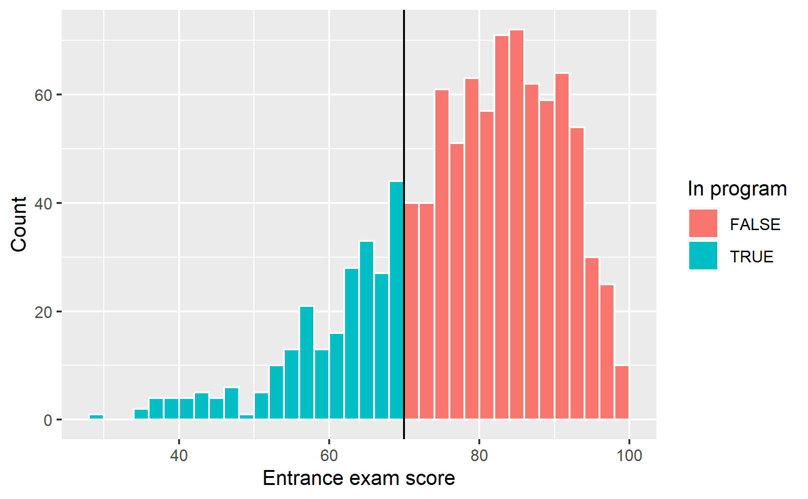
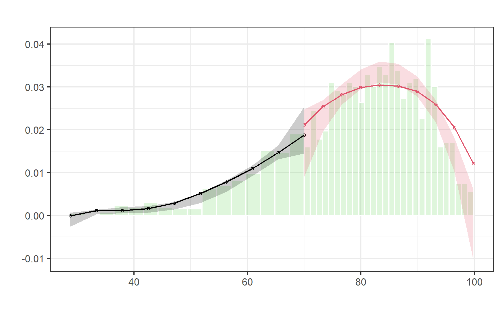
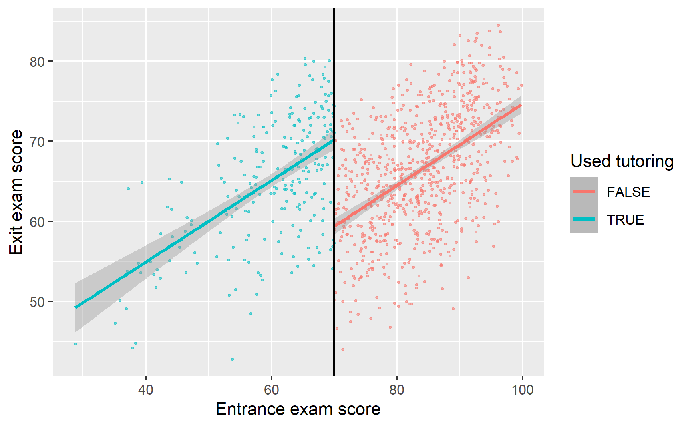
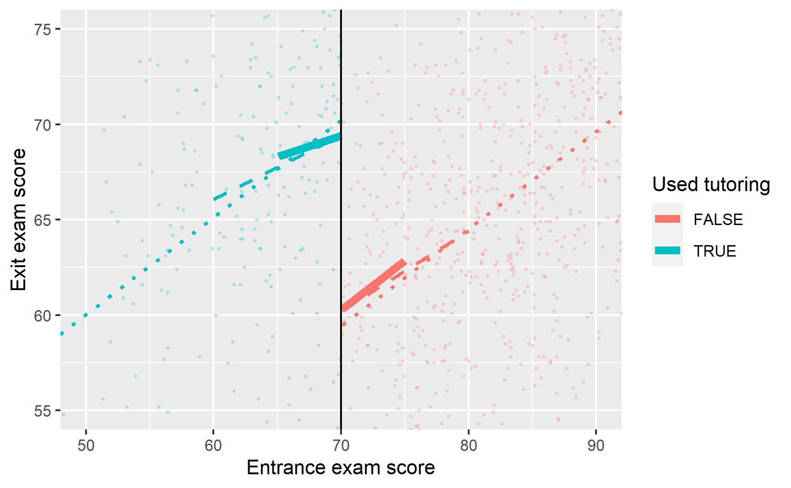
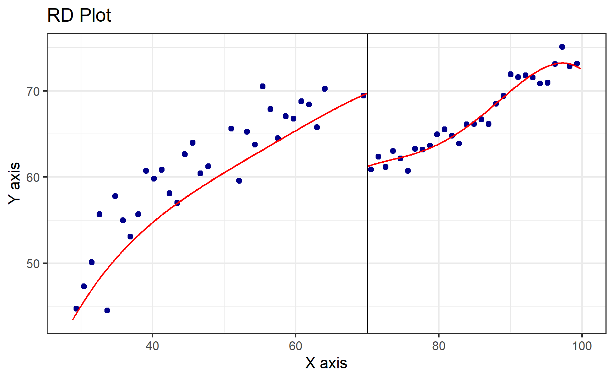

library(tidyverse) # ggplot(), %>%, mutate(), and friends
library(broom) # Convert models to data frames
library(rdrobust) # For robust nonparametric regression discontinuity
library(rddensity) # For nonparametric regression discontinuity density tests
library(modelsummary) # Create side-by-side regression tablesRegression discontinuity
Video walk-through
This is from Andrew Heiss course on program evaluation techniques. You can visit his website for getting all the videos and lecture notes
Warning
Important: The results will be slightly different here than they were in the video. That’s because in the data I used in the video, I didn’t round any values, so people could score a 71.8392402 on the entrance exam, which is kind of an excessive number of decimals. In this data, I rounded everything to one decimal point (e.g. 71.8), so the gaps and lines will be a tiny bit different here.
Program background
In this hypothetical example, students take an entrance exam at the beginning of a school year. Those who score 70 or below are automatically enrolled in a free tutoring program and receive assistance throughout the year. At the end of the school year, students take a final test, or exit exam (with a maximum of 100 points) to measure how much they learned overall. Remember, this is a hypothetical example and tests like this don’t really exist, but just go with it.
You have a dataset with four columns in it:
id: The ID of the studententrance_exam: The student’s entrance exam score (out of 100)exit_exam: The student’s exit exam score (out of 100)tutoring: An indicator variable showing if the student was enrolled in the tutoring program
Load and clean data
First, let’s download the dataset (if you haven’t already), put in a folder named data, and load it:
# Load the data.
# It'd be a good idea to click on the "tutoring" object in the Environment
# panel in RStudio to see what the data looks like after you load it
tutoring <- read_csv("tutoring_program.csv")Step 1: Determine if process of assigning treatment is rule-based
In order to join the tutoring program, students have to score 70 points or lower on the entrance exam. Students who score higher than 70 are not eligible for the program. Since we have a clear 70-point rule, we can assume that the process of participating in the tutoring program is rule-based.
Step 2: Determine if the design is fuzzy or sharp
Since we know that the program was applied based on a rule, we next want to figure out how strictly the rule was applied. The threshold was 70 points on the test—did people who scored 68 slip through bureaucratic cracks and not participate, or did people who scored 73 sneak into the program? The easiest way to check this is with a graph, and we can get exact numbers with a table.
ggplot(tutoring, aes(x = entrance_exam, y = tutoring, color = tutoring)) +
# Make points small and semi-transparent since there are lots of them
geom_point(size = 0.5, alpha = 0.5,
position = position_jitter(width = 0, height = 0.25, seed = 1234)) +
# Add vertical line
geom_vline(xintercept = 70) +
# Add labels
labs(x = "Entrance exam score", y = "Participated in tutoring program") +
# Turn off the color legend, since it's redundant
guides(color = "none")
This looks pretty sharp—it doesn’t look like people who scored under 70 participated in the program. We can verify this with a table. There are no people where entrance_exam is greater than 70 and tutoring is false, and no people where entrance_exam is less than 70 and tutoring is true.
tutoring %>%
group_by(tutoring, entrance_exam <= 70) %>%
summarize(count = n())
## # A tibble: 2 × 3
## # Groups: tutoring [2]
## tutoring `entrance_exam <= 70` count
## <lgl> <lgl> <int>
## 1 FALSE FALSE 759
## 2 TRUE TRUE 241This is thus a sharp design.
Step 3: Check for discontinuity in running variable around cutpoint
Next we need to see if there was any manipulation in the running variable—maybe lots of people bunched up around 70 because of how the test was graded (i.e. students wanted to get into the program, so they purposely did poorly on the exam to get under 70). We can do this a couple different ways. First, we’ll make a histogram of the running variable (test scores) and see if there are any big jumps around the threshold:
ggplot(tutoring, aes(x = entrance_exam, fill = tutoring)) +
geom_histogram(binwidth = 2, color = "white", boundary = 70) +
geom_vline(xintercept = 70) +
labs(x = "Entrance exam score", y = "Count", fill = "In program")
Here it doesn’t look like there’s a jump around the cutoff—there’s a tiny visible difference between the height of the bars right before and right after the 70-point threshold, but it seems to follow the general shape of the overall distribution. We can check to see if that jump is statistically significant with a McCrary density test (explained in section 6.3.1 of Causal Inference: The Mixtape). This puts data into bins like a histogram, and then plots the averages and confidence intervals of those bins. If the confidence intervals of the density lines don’t overlap, then there’s likely something systematically wrong with how the test was scored (i.e. too many people getting 69 vs 71). If the confidence intervals overlap, there’s not any significant difference around the threshold and we’re fine.
First we use rddensity() to do the actual statistical test. You need to feed it two things: the running variable and the cutoff.
# Notice this tutoring$entrance_exam syntax. This is one way for R to access
# columns in data frames---it means "use the entrance_exam column in the
# tutoring data frame". The general syntax for it is data_frame$column_name
test_density <- rddensity(tutoring$entrance_exam, c = 70)
summary(test_density)## Manipulation testing using local polynomial density estimation.
##
## Number of obs = 1000
## Model = unrestricted
## Kernel = triangular
## BW method = estimated
## VCE method = jackknife
##
## c = 70 Left of c Right of c
## Number of obs 237 763
## Eff. Number of obs 208 577
## Order est. (p) 2 2
## Order bias (q) 3 3
## BW est. (h) 22.444 19.966
##
## Method T P > |T|
## Robust -0.5521 0.5809We can then plot that density test:
# The syntax for rdplotdensity is kinda wonky here. You have to feed it the
# rddensity() test, and then you have to specify x, which is your running
# variable (again!). The type argument tells the plot to show both points and
# lines---without it, it'll only show lines.
#
# Finally, notice how I assigned the output of rdplotdensity to a variable named
# plot_density_test. In theory, this should make it show nothing---all the
# output should go to that object. Because of a bug in rdplotdensity, though, it
# will show a plot automatically even if assigning it to a variable. If we don't
# assign it to a variable you'll see two identical plots when knitting, which is
# annoying. So we save it as a variable to hide the output, but get the output
# for a single plot anyway. Ugh.
plot_density_test <- rdplotdensity(rdd = test_density,
X = tutoring$entrance_exam,
type = "both") # This adds both points and lines
There’s a lot of output here, but what we care about is the line that starts with “Robust”, which shows the t-test for the difference in the two points on either side of the cutpoint in the plot. Notice in the plot that the confidence intervals overlap substantially. The p-value for the size of that overlap is 0.5809, which is a lot larger than 0.05, so we don’t have good evidence that there’s a significant difference between the two lines. Based on this plot and the t-statistic, we’re probably safe in saying that there’s no manipulation or bunching.
Step 4: Check for discontinuity in outcome across running variable
Now that we know this is a sharp design and that there’s no bunching of test scores around the 70-point threshold, we can finally see if there’s a discontinuity in final scores based on participation in the tutoring program. Plot the running variable on the x-axis, the outcome variable on the y-axis, and color the points by whether they participated in the program.
ggplot(tutoring, aes(x = entrance_exam, y = exit_exam, color = tutoring)) +
geom_point(size = 0.5, alpha = 0.5) +
# Add a line based on a linear model for the people scoring 70 or less
geom_smooth(data = filter(tutoring, entrance_exam <= 70), method = "lm") +
# Add a line based on a linear model for the people scoring more than 70
geom_smooth(data = filter(tutoring, entrance_exam > 70), method = "lm") +
geom_vline(xintercept = 70) +
labs(x = "Entrance exam score", y = "Exit exam score", color = "Used tutoring")
Based on this graph, there’s a clear discontinuity! It looks like participation in the tutoring program boosted final test scores.
Step 5: Measure the size of the effect
There’s a discontinuity, but how big is it? And is it statistically significant?
We can check the size two different ways: parametrically (i.e. using lm() with specific parameters and coefficients), and nonparametrically (i.e. not using lm() or any kind of straight line and instead drawing lines that fit the data more precisely). We’ll do it both ways.
Parametric estimation
First we’ll do it parametrically by using linear regression. Here we want to explain the variation in final scores based on the entrance exam score and participation in the tutoring program:
\[ \text{Exit exam} = \beta_0 + \beta_1 \text{Entrance exam score}_\text{centered} + \beta_2 \text{Tutoring program} + \epsilon \]
To make it easier to interpret coefficients, we can center the entrance exam column so that instead of showing the actual test score, it shows how many points above or below 70 the student scored. That way we can use the coefficient for tutoring for the causal effect.
tutoring_centered <- tutoring %>%
mutate(entrance_centered = entrance_exam - 70)
model_simple <- lm(exit_exam ~ entrance_centered + tutoring,
data = tutoring_centered)
tidy(model_simple)
## # A tibble: 3 × 5
## term estimate std.error statistic p.value
## <chr> <dbl> <dbl> <dbl> <dbl>
## 1 (Intercept) 59.4 0.442 134. 0
## 2 entrance_centered 0.510 0.0269 18.9 1.40e-68
## 3 tutoringTRUE 10.8 0.800 13.5 3.12e-38Here’s what these coefficients mean:
- \(\beta_0\): This is the intercept. Because we centered entrance exam scores, it shows the average exit exam score at the 70-point threshold. People who scored 70.001 points on the entrance exam score an average of 59.4 points on the exit exam. (Another way to think about this is that it shows the predicted exit exam score when
entrance_centeredis 0 (i.e. 70) and whentutoringisFALSE.) - \(\beta_1\): This is the coefficient for
entrance_centered. For every point above 70 that people score on the entrance exam, they score 0.51 points higher on the exit exam. We don’t really care that much about this number. - \(\beta_2\): This is the coefficient for the tutoring program, and this is the one we care about the most. This is the shift in intercept when
tutoringis true, or the difference between scores at the threshold. Participating in the tutoring program increases exit exam scores by 10.8 points.
One advantage to using a parametric approach is that you can include other covariates like demographics. You can also use polynomial regression and include terms like entrance_centered² or entrance_centered³ or even entrance_centered⁴ to make the line fit the data as close as possible.
Here we fit the model to the entire data, but in real life, we care most about the observations right around the threshold, which means this model is actually wrong. Scores that are super high or super low shouldn’t really influence our effect size, since we only care about the people who score just barely under and just barely over 70.
We can fit the same model but restrict it to people within a smaller window, or bandwidth, like ±10 points, or ±5 points:
model_bw_10 <- lm(exit_exam ~ entrance_centered + tutoring,
data = filter(tutoring_centered,
entrance_centered >= -10 &
entrance_centered <= 10))
tidy(model_bw_10)
## # A tibble: 3 × 5
## term estimate std.error statistic p.value
## <chr> <dbl> <dbl> <dbl> <dbl>
## 1 (Intercept) 60.4 0.752 80.3 2.99e-249
## 2 entrance_centered 0.388 0.114 3.40 7.45e- 4
## 3 tutoringTRUE 9.27 1.31 7.09 6.27e- 12
model_bw_5 <- lm(exit_exam ~ entrance_centered + tutoring,
data = filter(tutoring_centered,
entrance_centered >= -5 &
entrance_centered <= 5))
tidy(model_bw_5)
## # A tibble: 3 × 5
## term estimate std.error statistic p.value
## <chr> <dbl> <dbl> <dbl> <dbl>
## 1 (Intercept) 60.6 1.12 54.3 4.78e-118
## 2 entrance_centered 0.380 0.331 1.15 2.53e- 1
## 3 tutoringTRUE 9.12 1.91 4.77 3.66e- 6We can compare all these models simultaneously with modelsummary():
modelsummary(list("Full data" = model_simple,
"Bandwidth = 10" = model_bw_10,
"Bandwidth = 5" = model_bw_5))| Full data | Bandwidth = 10 | Bandwidth = 5 | |
|---|---|---|---|
| (Intercept) | 59.411*** | 60.377*** | 60.631*** |
| (0.442) | (0.752) | (1.117) | |
| entrance_centered | 0.510*** | 0.388*** | 0.380 |
| (0.027) | (0.114) | (0.331) | |
| tutoringTRUE | 10.800*** | 9.273*** | 9.122*** |
| (0.800) | (1.309) | (1.912) | |
| Num.Obs. | 1000 | 404 | 194 |
| R2 | 0.268 | 0.162 | 0.222 |
| R2 Adj. | 0.267 | 0.158 | 0.214 |
| + p < 0.1, * p < 0.05, ** p < 0.01, *** p < 0.001 |
The effect of tutoring differs a lot across these different models, from 9.1 to 10.8. Which one is right? I don’t know. Definitely not the full data one.
Also notice how much the sample size (N) changes across the models. As you narrow the bandwidth, you look at fewer and fewer observations.
ggplot(tutoring, aes(x = entrance_exam, y = exit_exam, color = tutoring)) +
geom_point(size = 0.5, alpha = 0.2) +
# Add lines for the full model (model_simple)
geom_smooth(data = filter(tutoring, entrance_exam <= 70),
method = "lm", se = FALSE, linetype = "dotted", size = 1) +
geom_smooth(data = filter(tutoring, entrance_exam > 70),
method = "lm", se = FALSE, linetype = "dotted", size = 1) +
# Add lines for bandwidth = 10
geom_smooth(data = filter(tutoring, entrance_exam <= 70, entrance_exam >= 60),
method = "lm", se = FALSE, linetype = "dashed", size = 1) +
geom_smooth(data = filter(tutoring, entrance_exam > 70, entrance_exam <= 80),
method = "lm", se = FALSE, linetype = "dashed", size = 1) +
# Add lines for bandwidth = 5
geom_smooth(data = filter(tutoring, entrance_exam <= 70, entrance_exam >= 65),
method = "lm", se = FALSE, size = 2) +
geom_smooth(data = filter(tutoring, entrance_exam > 70, entrance_exam <= 75),
method = "lm", se = FALSE, size = 2) +
geom_vline(xintercept = 70) +
# Zoom in
coord_cartesian(xlim = c(50, 90), ylim = c(55, 75)) +
labs(x = "Entrance exam score", y = "Exit exam score", color = "Used tutoring")
## Warning: Using `size` aesthetic for lines was deprecated in ggplot2 3.4.0.
## ℹ Please use `linewidth` instead.
Nonparametric estimation
Instead of using linear regression to measure the size of the discontinuity, we can use nonparametric methods. Essentially this means that R will not try to fit a straight line to the data—instead it’ll curve around the points and try to fit everything as smoothly as possible.
The rdrobust() function makes it really easy to measure the gap at the cutoff with nonparametric estimation. Here’s the simplest version:
# Notice how we have to use the tutoring$exit_exam syntax here. Also make sure
# you set the cutoff with c
rdrobust(y = tutoring$exit_exam, x = tutoring$entrance_exam, c = 70) %>%
summary()
## [1] "Mass points detected in the running variable."
## Sharp RD estimates using local polynomial regression.
##
## Number of Obs. 1000
## BW type mserd
## Kernel Triangular
## VCE method NN
##
## Number of Obs. 237 763
## Eff. Number of Obs. 144 256
## Order est. (p) 1 1
## Order bias (q) 2 2
## BW est. (h) 9.969 9.969
## BW bias (b) 14.661 14.661
## rho (h/b) 0.680 0.680
## Unique Obs. 155 262
##
## =============================================================================
## Method Coef. Std. Err. z P>|z| [ 95% C.I. ]
## =============================================================================
## Conventional -8.578 1.601 -5.359 0.000 [-11.715 , -5.441]
## Robust - - -4.352 0.000 [-12.101 , -4.587]
## =============================================================================There are a few important pieces of information to look at in this output:
- The thing you care about the most is the actual effect size. This is the coefficient in the table at the bottom, indicated with the “Conventional” method. Here it’s -8.578, which means the tutoring program causes an 8-point change in exit exam scores. The table at the bottom also includes standard errors, p-values, and confidence intervals for the coefficient, both normal estimates (conventional) and robust estimates (robust). According to both types of estimates, this 8 point bump is statistically significant (p < 0.001; the 95% confidence interval definitely doesn’t ever include 0).
- Importantly, notice that the coefficient here is actually negative (-8.578), while our previous parametric estimates were all positive. That does not mean that the program causes a drop in test scores. That negative value is just a side effect of how
rdrobust()measures the gap. It looks at the value of the treatment group right before the threshold and then shows that test scores drop when shifting to the control group (while before we talked about the opposite story: test scores increase as you move from the control group to the treatment group). There’s no way to flip the sign withinrdrobust(), so you need to look at the plot and see what the gap is really doing. - The model used a bandwidth of 9.969 (
BW est. (h)in the output), which means it only looked at people with test scores of 70 ± 10. It decided on this bandwidth automatically, but you can change it to whatever you want. - The model used a triangular kernel. This is the most esoteric part of the model—the kernel decides how much weight to give to observations around the cutoff. Test scores like 69.99 or 70.01 are extremely close to 70, so they get the most weight. Scores like 67 or 73 are a little further away so they matter less. Scores like 64 or 76 matter even less, so they get even less weight. You can use different kernels too, and Wikipedia has a nice graphic showing the shapes of these different kernels and how they give different weights to observations at different distances.
We can plot this nonparametric model with rdplot().
rdplot(y = tutoring$exit_exam, x = tutoring$entrance_exam, c = 70)
## [1] "Mass points detected in the running variable."
Look at that 8.5 point jump at 70! Neat!
Notice that the points here aren’t actually the observations in the dataset. The rdplot() function makes bins of points (like a histogram) and then shows the average outcome within each bin. You can control how many bins are used in the x-axis with the nbins or binselect arguments in rdplot() (run ?rdplot in your console to see all the possible options for plotting nonparametric discontinuities).
Note
Side note: rdplot() uses the same plotting system as ggplot(), so you can add layers like labs() or geom_point() or anything else, which is cool, but getting to that underlying ggplot() object is weird. To do it, store the results of rdplot as an object, like asdf, then use asdf$rdplot to access the plot:
asdf <- rdplot(...)
asdf$rdplot +
labs(x = "Running variable", y = "Outcome variable")You don’t need to worry about all that for showing simple plots though!
By default, rdrobust() chooses the bandwidth size automatically based on fancy algorithms that economists have developed. You can use rdbwselect() to see what that bandwidth is, and if you include the all = TRUE argument, you can see a bunch of different potential bandwidths based on a bunch of different algorithms:
# This says to use the mserd version, which according to the help file for
# rdbwselect means "the mean squared error-optimal bandwidth selector for RD
# treatment effects". Sounds great.
rdbwselect(y = tutoring$exit_exam, x = tutoring$entrance_exam, c = 70) %>%
summary()
## [1] "Mass points detected in the running variable."
## Call: rdbwselect
##
## Number of Obs. 1000
## BW type mserd
## Kernel Triangular
## VCE method NN
##
## Number of Obs. 237 763
## Order est. (p) 1 1
## Order bias (q) 2 2
## Unique Obs. 155 262
##
## =======================================================
## BW est. (h) BW bias (b)
## Left of c Right of c Left of c Right of c
## =======================================================
## mserd 9.969 9.969 14.661 14.661
## =======================================================What are the different possible bandwidths we could use?
rdbwselect(y = tutoring$exit_exam, x = tutoring$entrance_exam, c = 70, all = TRUE) %>%
summary()
## [1] "Mass points detected in the running variable."
## Call: rdbwselect
##
## Number of Obs. 1000
## BW type All
## Kernel Triangular
## VCE method NN
##
## Number of Obs. 237 763
## Order est. (p) 1 1
## Order bias (q) 2 2
## Unique Obs. 155 262
##
## =======================================================
## BW est. (h) BW bias (b)
## Left of c Right of c Left of c Right of c
## =======================================================
## mserd 9.969 9.969 14.661 14.661
## msetwo 11.521 10.054 17.067 14.907
## msesum 12.044 12.044 17.631 17.631
## msecomb1 9.969 9.969 14.661 14.661
## msecomb2 11.521 10.054 17.067 14.907
## cerrd 7.058 7.058 14.661 14.661
## certwo 8.156 7.118 17.067 14.907
## cersum 8.526 8.526 17.631 17.631
## cercomb1 7.058 7.058 14.661 14.661
## cercomb2 8.156 7.118 17.067 14.907
## =======================================================Phew. There are a lot here. The best one was mserd, or ±9.69. Some say ±7, others ±12, other are asymmetric and say -11.5 before and +10 after. Try a bunch of different bandwidths as part of your sensitivity analysis and see if your effect size changes substantially as a result.
Another common approach to sensitivity analysis is to use the ideal bandwidth, twice the ideal, and half the ideal (so in our case 10, 20, and 5) and see if the estimate changes substantially. Use the h argument to specify your own bandwidth
rdrobust(y = tutoring$exit_exam, x = tutoring$entrance_exam, c = 70, h = 9.969) %>%
summary()
## Sharp RD estimates using local polynomial regression.
##
## Number of Obs. 1000
## BW type Manual
## Kernel Triangular
## VCE method NN
##
## Number of Obs. 237 763
## Eff. Number of Obs. 144 256
## Order est. (p) 1 1
## Order bias (q) 2 2
## BW est. (h) 9.969 9.969
## BW bias (b) 9.969 9.969
## rho (h/b) 1.000 1.000
## Unique Obs. 237 763
##
## =============================================================================
## Method Coef. Std. Err. z P>|z| [ 95% C.I. ]
## =============================================================================
## Conventional -8.578 1.601 -5.359 0.000 [-11.715 , -5.441]
## Robust - - -3.276 0.001 [-12.483 , -3.138]
## =============================================================================
rdrobust(y = tutoring$exit_exam, x = tutoring$entrance_exam, c = 70, h = 9.969 * 2) %>%
summary()
## Sharp RD estimates using local polynomial regression.
##
## Number of Obs. 1000
## BW type Manual
## Kernel Triangular
## VCE method NN
##
## Number of Obs. 237 763
## Eff. Number of Obs. 206 577
## Order est. (p) 1 1
## Order bias (q) 2 2
## BW est. (h) 19.938 19.938
## BW bias (b) 19.938 19.938
## rho (h/b) 1.000 1.000
## Unique Obs. 237 763
##
## =============================================================================
## Method Coef. Std. Err. z P>|z| [ 95% C.I. ]
## =============================================================================
## Conventional -9.151 1.130 -8.100 0.000 [-11.365 , -6.937]
## Robust - - -4.980 0.000 [-11.670 , -5.078]
## =============================================================================
rdrobust(y = tutoring$exit_exam, x = tutoring$entrance_exam, c = 70, h = 9.969 / 2) %>%
summary()
## Sharp RD estimates using local polynomial regression.
##
## Number of Obs. 1000
## BW type Manual
## Kernel Triangular
## VCE method NN
##
## Number of Obs. 237 763
## Eff. Number of Obs. 82 109
## Order est. (p) 1 1
## Order bias (q) 2 2
## BW est. (h) 4.984 4.984
## BW bias (b) 4.984 4.984
## rho (h/b) 1.000 1.000
## Unique Obs. 237 763
##
## =============================================================================
## Method Coef. Std. Err. z P>|z| [ 95% C.I. ]
## =============================================================================
## Conventional -8.201 2.348 -3.493 0.000 [-12.803 , -3.600]
## Robust - - -2.032 0.042 [-13.618 , -0.246]
## =============================================================================Here the coefficients change slightly:
| Bandwidth | Effect size |
|---|---|
| 9.969 (ideal) | 8.578 |
| 19.938 (twice) | 9.151 |
| 4.984 (half) | 8.201 |
You can also adjust the kernel. By default rd_robust uses a triangular kernel (more distant observations have less weight linearly), but you can switch it to Epanechnikov (more distant observations have less weight following a curve) or uniform (more distant observations have the same weight as closer observations; this is unweighted).
# Non-parametric RD with different kernels
rdrobust(y = tutoring$exit_exam, x = tutoring$entrance_exam,
c = 70, kernel = "triangular") %>%
summary() # Default
## [1] "Mass points detected in the running variable."
## Sharp RD estimates using local polynomial regression.
##
## Number of Obs. 1000
## BW type mserd
## Kernel Triangular
## VCE method NN
##
## Number of Obs. 237 763
## Eff. Number of Obs. 144 256
## Order est. (p) 1 1
## Order bias (q) 2 2
## BW est. (h) 9.969 9.969
## BW bias (b) 14.661 14.661
## rho (h/b) 0.680 0.680
## Unique Obs. 155 262
##
## =============================================================================
## Method Coef. Std. Err. z P>|z| [ 95% C.I. ]
## =============================================================================
## Conventional -8.578 1.601 -5.359 0.000 [-11.715 , -5.441]
## Robust - - -4.352 0.000 [-12.101 , -4.587]
## =============================================================================
rdrobust(y = tutoring$exit_exam, x = tutoring$entrance_exam,
c = 70, kernel = "epanechnikov") %>%
summary()
## [1] "Mass points detected in the running variable."
## Sharp RD estimates using local polynomial regression.
##
## Number of Obs. 1000
## BW type mserd
## Kernel Epanechnikov
## VCE method NN
##
## Number of Obs. 237 763
## Eff. Number of Obs. 130 204
## Order est. (p) 1 1
## Order bias (q) 2 2
## BW est. (h) 8.201 8.201
## BW bias (b) 12.807 12.807
## rho (h/b) 0.640 0.640
## Unique Obs. 155 262
##
## =============================================================================
## Method Coef. Std. Err. z P>|z| [ 95% C.I. ]
## =============================================================================
## Conventional -8.389 1.677 -5.001 0.000 [-11.677 , -5.101]
## Robust - - -4.085 0.000 [-12.116 , -4.260]
## =============================================================================
rdrobust(y = tutoring$exit_exam, x = tutoring$entrance_exam,
c = 70, kernel = "uniform") %>%
summary()
## [1] "Mass points detected in the running variable."
## Sharp RD estimates using local polynomial regression.
##
## Number of Obs. 1000
## BW type mserd
## Kernel Uniform
## VCE method NN
##
## Number of Obs. 237 763
## Eff. Number of Obs. 119 176
## Order est. (p) 1 1
## Order bias (q) 2 2
## BW est. (h) 7.346 7.346
## BW bias (b) 12.561 12.561
## rho (h/b) 0.585 0.585
## Unique Obs. 155 262
##
## =============================================================================
## Method Coef. Std. Err. z P>|z| [ 95% C.I. ]
## =============================================================================
## Conventional -8.175 1.651 -4.952 0.000 [-11.411 , -4.939]
## Robust - - -4.085 0.000 [-11.704 , -4.115]
## =============================================================================Again, the coefficients change slightly:
| Kernel | Effect size |
|---|---|
| Triangular | 8.578 |
| Epanechnikov | 8.389 |
| Uniform | 8.175 |
Which one is best? ¯\_(ツ)_/¯. All that really matters is that the size and direction of the effect doesn’t change. It’s still positive and it’s still in the 8–9ish point range.
Step 6: Compare all the effects
We just estimated a ton of effect sizes. In real life you’d generally just report one of these as your final effect, but you’d run the different parametric and nonparametric models to check how reliable and robust your findings are. Here’s everything we just found:
| Method | Bandwidth | Kernel | Estimate |
|---|---|---|---|
| Parametric | Full data | Unweighted | 10.8 |
| Parametric | 10 | Unweighted | 9.273 |
| Parametric | 5 | Unweighted | 9.122 |
| Nonparametric | 9.969 | Triangular | 8.578 |
| Nonparametric | 19.938 | Triangular | 9.151 |
| Nonparametric | 4.984 | Triangular | 8.201 |
| Nonparametric | 8.201 | Epanechnikov | 8.389 |
| Nonparametric | 7.346 | Uniform (unweighted) | 8.175 |
In real life, I’d likely report the simplest one (row 4: nonparametric, automatic bandwidth, triangular kernel), but knowing how much the effect varies across model specifications is helpful.